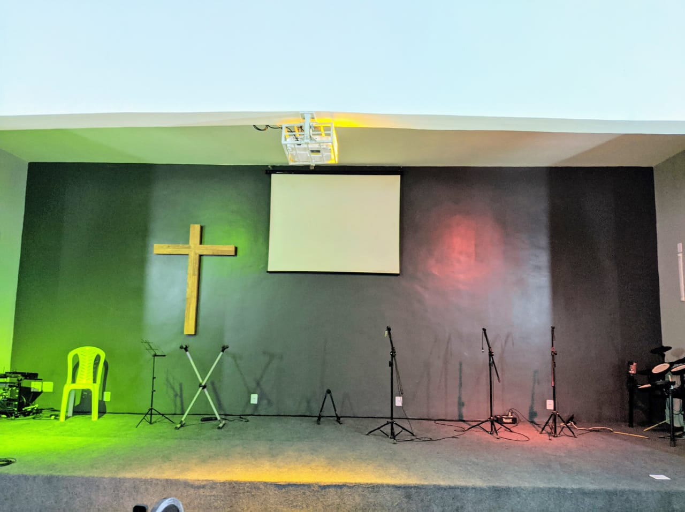

Fechar

Cultos / Celebrações
Domingo
Oração: 8hs / EBD 9hs / Culto de Louvor e Adoração 19hs
Sábado
Encontro da Adojovem todo segundo sábado do mês
TESTE 1
Realizando testes para verificar o posicionamento
TESTE 2
Realizando testes para verificar o posicionamento
TESTE 3
Realizando testes para verificar o posicionamento
TESTE 4
Realizando testes para verificar o posicionamento

Ministérios